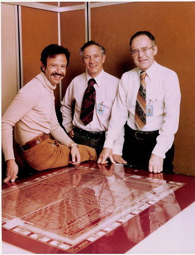

Компании, производящие процессоры
Производство процессоров - это тяжёлая задача, требующая нужного оборудования, знаний и ресурсов. Причём процессоры для определённых устройств должны быть разными, например, для ПК и мобильного телефона.
Также встаёт проблема о совместимости программного обеспечения для устройств с разными процессорами, компании, производящие ПО, не хотят его переписывать под разные устройства. Поэтому процессоры разрабатываются единицами компаний.
Intel
Одна из известнейших и крупнейших компаний по производству электронных устройств и компьютерных компонентов, в особенности процессоров.
Основали эту компанию 3 человека: Эндрю Гроув, Роберт Нойс и Гордон Мур (которому принадлежит закон Мура). Уже в 1971, по заказу японской компании Busicom, был произведён первый микропроцессор Intel 4004.
Доля Intel на рынке микросхем, с 1970-х, начала снижатся с 82.4% до 1.3% в 1984 году. Однако, это компенсировалось тем, что компания стала лидером на рынке процессоров.
Intel до сих пор занимает крупнейшию долю рынка электротехники, 70.4% доли рынка, и зарабатывает многомиллиардные доходы на производстве процессоров и ПЛИС. На 2022 год чистая прибыль компании составила 8 миллиардов долларов.
AMD
AMD - одни из главных конкурентов Intel по производству процессоров для персональных компьютеров. Она была основана Джерри Сандерсом в 1969 году вместе с его коллегами - выходцами из Fairchild Semiconductor.
Первым выпущенным микропроцессором AMD был клон Intel 8008 - Am9080 выпущенный в 1975 году. В 1976 году Intel и AMD заключили соглашение на авторское правило на микрокод и периферийные устройства.
С 2006 года компания начала поглощать другие IT компании: ATI Technologies, SeaMicro и других, за что она получила повестку в суд от министерства юстиции США за нарушение антимонопольного законодательства.
В 2020 году компания слилась с крупным производителем ПЛИС Xilinx (Зайлинкс). На 2022 год AMD имеет чистую прибыль в 1.32 млрд. долларов.
IBM
Другим конкурентом Intel является IBM, однако IBM специализируется на процессорах для суперкомпютеров.
IBM - одна из самых старых компаний по производству аппаратного и программного обеспечения, с 1911. Основали её предприниматель Томас Джон Уотсон и бизнесмен Чарльз Флинт
За IBM находятся много достижений в области IT технологий: в 1971 году они представили гибкий диск, изобрели BIOS, породили рынок персональных компьютеров.
Однако IBM не смогла удержаться на рынке персональных компьютеров, как из-за неправильных решений компаний, так и из-за проигранного судебного иска от министерства юстиции США, из-за чего компания получила 8 млрд. долларов убытков и сокращение около 100 тысяч сотрудников.
В 1990-х годах IBM перешла из разработки компьютеров в разработку программного обеспечения. Корпорация, на данный момент, стремится стать лидером в кибербезопасности. И на 2022 год IBM имеет прибыль в 1.632 млрд. долларов.